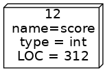
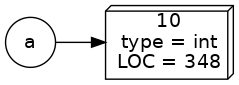

Variabelen en operatoren¶
Variabelen¶
Datatypen
getallen
strings (tekst)
booleans (true of false)
…
Variabelen hebben altijd een datatype, ongeacht de taal. De wijze van toekenning van waarden aan variabelen, en daarmee de typen, kunnen verschillen. We gaan een onderscheid maken tussen dynamisch- en statisch getypeerde talen.
Dynamisch- en statisch getypeerde talen¶
Dynamisch getypeerd
Het type wordt bepaald tijdens uitvoering van een programma aan de hand van de waarde die aan de variabele wordt toegekend, het type kan veranderen door toekenning van andere waarden.
Voorbeelden van dynamisch getypeerde talen zijn Python, PHP en JavaScript.
Voorbeeld¶
a = 10
a = "tien"
Dit is een voorbeeld in Python. Tijdens de loop van het programma (runtime) zal a eerst verwijzen naar een waarde van type integer (10), later naar een type string ("tien").
Statisch (of sterk) getypeerd
Het type wordt vooraf vastgelegd (gedeclareerd) en het type kan niet veranderen.
Java is een statisch getypeerde programmeertaal waar alle variabelen vóór gebruik gedeclareerd moeten worden. Een ander voorbeeld van een statisch getypeerde taal is C.
Variabelen declareren¶
Het declareren van een variabele vindt plaats met de volgende syntax:
<type> <naam>
int score; // variabele met naam 'score' en type int
String woonplaats; // variabele met naam 'woonplaats' en type String
double prijs; // variabele met naam 'prijs' en type double
boolean isManager; // variabele met naam 'isManager' en type boolean
De variabelen hebben hier nog geen waarde, je verklaart hier alleen dat je een variabele van een bepaald type gaat gebruiken, de daadwerkelijke waarde zal pas later worden gezet (geïnitialisereerd).
Variabelen initialiseren¶
Als een variabele eenmaal is gedeclareerd, dan kan daar een waarde aan worden toegekend.
score = 12;
woonplaats = "Groningen";
prijs = 4.95;
isManager = true;
score = "twaalf"
| score = "twaalf"
incompatible types: java.lang.String cannot be converted to int
Dit geeft een fout. Als het type eenmaal is gedeclareed dan mag geen waarde van een ander type worden toegekend!
Declareren én initialiseren¶
int score = 12;
String woonplaats = "Groningen";
double prijs = 4.95;
boolean isManager = true;
Declareren en initialiseren kan in één regel!
Dynamische versus statische toekenning¶
int score = 12;

Je hebt nu gezien hoe variabelen worden gedeclareerd (met type en naam) en vervolgens worden geinitialiseerd met een waarde van het type dat eerder is gedeclareerd. Naam, type en waarde horen bij elkaar en worden als geheel in het geheugen bewaard. Het type kan niet meer worden gewijzigd en daarmee kan het ook niet meer een waarde van een ander type krijgen.
a = 10

Hoe verschilt dit nu van dynamische typering? Een taal als Python zal bij de toekenning van een waarde een object in het geheugen aanmaken met type en waarde. De naam (variabele) is echter een verwijzing naar (en niet een onderdeel van) het object.
a = "tien"

Een verwijzing wordt nu gemaakt naar een nieuw object, een string in dit geval. De verwijzing naar het vorige object bestaat niet meer en het object zal op een gegeven moment uit het geheugen worden verwijderd (garbage collection).
Strikt (technisch) gezien zou je kunnen stellen dat het objecttype niet verandert, alleen maar de verwijzing.
Je kan je misschien nu afvragen welke benadering (statisch of dynamisch) beter is. Ons antwoord is dat het niet een kwestie van beter of slechter is, beide hebben hun voor- en nadelen.
Variabelen en geheugen¶
int a = 3;
int b = a;
De bovenstaande declaraties plaatsen twee integers in het geheugen. De toekenning b = a plaatst de waarde van a in b
a = 10;
Wat is de waarde van a en b na het uitvoeren van deze regel?
a
10
b
3
Variabelen op de console¶
Variabelen kunnen meegegeven worden aan een System.out.println-statement.
System.out.println(score);
System.out.println(woonplaats);
System.out.println(prijs);
System.out.println(isManager);
12
Groningen
4.95
true
Dit kan ook gecombineerd worden met tekst:
System.out.println("Score: " + score);
Score: 12
Ook complexere combinaties zijn mogelijk:
System.out.println("De prijs van een middag parkeren in "+woonplaats+" is €"+prijs+".");
De prijs van een middag parkeren in Groningen is €4.95.
Typen in Java¶
Java heeft 8 verschillende primitieve typen.
De meeste daarvan zijn numerieke types, variabelen die een getal bevatten.
Numerieke types zijn in twee groepen te verdelen:
gehele getallen
floating point getallen.
Gehele getallen¶
Type |
Omvang |
Bereik |
|---|---|---|
byte |
8 bits |
-128 t/m 127 |
short |
16 bits |
-32768 t/m 32767 |
int |
32 bits |
-2 147 483 648 t/m 2 147 483 647 |
long |
64 bits |
-2^63 t/m 2^63-1 |
Gehele getallen in Java zijn altijd signed.
Floating point getallen¶
Type |
Omvang |
|---|---|
float |
32 bits |
double |
64 bits |
Naast de algemene numerieke types heeft Java nog twee aanvullende types, float en double.
Overige types¶
Type |
Beschrijving |
|---|---|
boolean |
heeft waarde true of false |
char |
één karakter |
Primitief?¶
Aanduidingen van primitieve types beginnen met een kleine letter.
int score = 12;
String text = "Hallo wereld!";
Maar we hebben eerder ook typen gezien met hoofdletter, bijvoorbeeld String. Dit zijn niet-primitieve types. Aanduidingen van niet-primitieve types beginnen met een hoofdletter. Deze worden later behandeld.
Voor nu is het belangrijk om te weten dat het niet-primitieve type String voor strings gebruikt wordt in Java.
Rekenkundige operatoren¶
Op numerieke types kunnen de basis rekenkundige operatoren gebruikt worden.
Dit zijn onder andere +, -, / en *:
int a = 10;
int b = 4;
System.out.println(a - b);
System.out.println(a * b);
System.out.println(a / b);
6
40
2
Het laatste voorbeeld waarbij a gedeeld wordt door b geeft wellicht een onverwacht resultaat. Het getal 10 delen door 4 levert immers het getal 2,5 op.
Verklaring: Het type van het resultaat van een operator is gebaseerd op de types waarop de operatie wordt toegepast. In dit voorbeeld: Twee integers worden door elkaar gedeeld. Resultaat komt ook in een integer, als geheel getal.
Oplossing:
System.out.println((float) a / b);
2.5
De type-aanduiding float tussen haakjes wordt een cast-operator genoemd. Het instrueert de compiler om a te behandelen alsof het een float is. Daardoor wordt het resultaat ook van het type float.
Voor modulo (rest) wordt % gebruikt:
int a = 20;
System.out.println(a % 8); // 4
4
Afrondingsfouten¶
System.out.println(0.1 * 10);
System.out.println(
0.1 + 0.1 + 0.1 + 0.1 + 0.1 +
0.1 + 0.1 + 0.1 + 0.1 + 0.1
);
1.0
0.9999999999999999
Bij floatingpoint getallen kun je te maken krijgen met afrondingsfouten, deze afrondingsfouten zijn inherent aan floatingpoint types!
String operatoren¶
Rekenkundige operatoren zoals aftrekken, delen en vermenigvuldigen zijn niet mogelijk met strings. Deze geven een compileerfout.
De + operator is wel mogelijk met strings. Deze combineert twee strings tot een nieuwe string.
String firstpart = "Hello ";
String secondpart = "world!";
String message = firstpart + secondpart;
System.out.println(message);
Hello world!
Ook complexere combinaties zijn mogelijk:
String greet="Hello";
String name="Hanze students";
String message = greet + " " + name + "!";
System.out.println(message);
Hello Hanze students!
Combineren met andere types is mogelijk:
int score=180;
String message = "Uw score is "+score+" punten!";
System.out.println(score);
180
In het bovenstaande voorbeeld wordt de numerieke variabele score impliciet omgezet naar een string en vervolgens gecombineerd met de andere strings.
Maar in een andere taal…¶
kan ik wel strings vermenigvuldigen!
"ha" * 10
De vermenigvuldigingsoperator * kan je in Java niet gebruiken in combinatie met strings. Bij het leren van een nieuwe taal zul je soms zoeken naar een manier om een idee uit te drukken die je misschien uit een andere taal kent, bijvoorbeeld Python. Het kan zijn dat de ontwerpers van een taal er voor gekozen hebben om het anders uit te druken of is het misschien technisch niet mogelijk.
String text = "ha";
text.repeat(10);
hahahahahahahahahaha
Dit is de oplossing die Java voor dit specifieke probleem heeft waar de methode repeat() van het String object text moet worden aangeroepen voor het aantal gewenste herhalingen. Let op, dit kan pas vanaf Java versie 11.
Fouten¶
Compiler fout
Runtime fout
Logische fout
Er zijn 3 types fouten die met het compileren of uitvoeren van een programma kunnen optreden.
Compiler fout¶
Een compiler fout treedt op tijdens het compileren, als een regel geen correcte Java-code bevat. Bijvoorbeeld een accolade of puntkomma ontbreekt.
Runtime fout¶
Een run-time fout treedt op tijdens het uitvoeren van een programma. Het compileren is in dat geval wel goed verlopen. Bijvoorbeeld delen door nul.
int a = 5;
int b = 0;
System.out.println(a / b);
---------------------------------------------------------------------------
java.lang.ArithmeticException: / by zero
at .(#54:1)
Logische fout¶
Van een logische fout is sprake als code succesvol is gecompileerd en zonder run-time fouten wordt uitgevoerd, maar door een programmeerfout niet het gewenste resultaat geeft.
Bijvoorbeeld een off-by-one fout:
String naam = "Hanze";
char derdeLetter = naam.charAt(3);
System.out.println("De derde letter van " + naam + " is " + derdeLetter);
De derde letter van Hanze is z